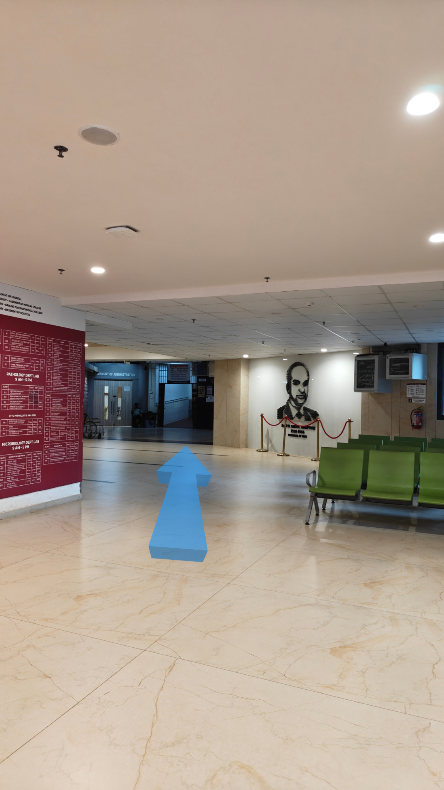
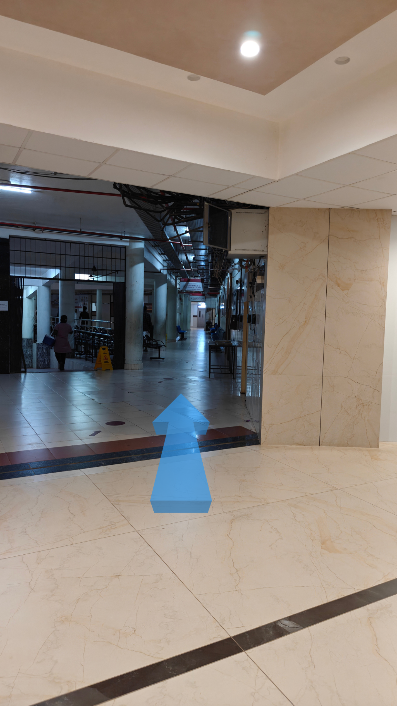
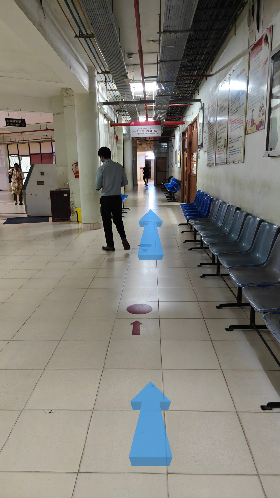
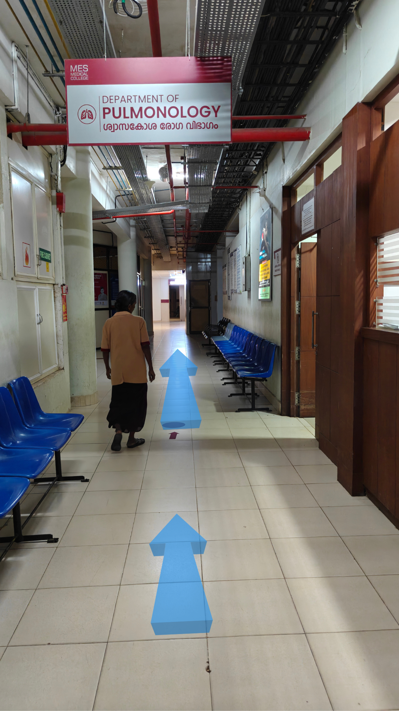
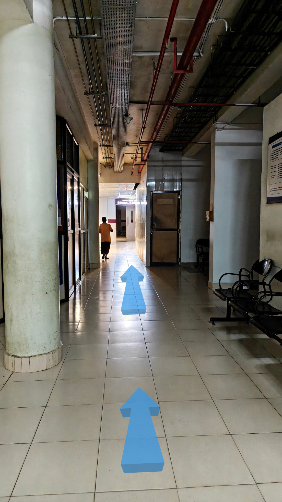
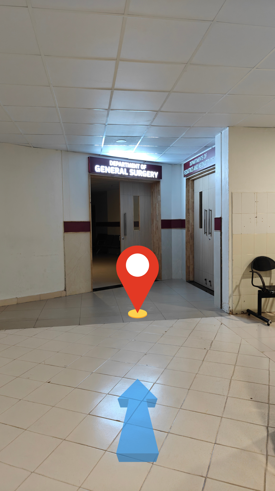

🔪 Directions to General Surgery
Step 1: From Main Entrance
Enter through the main reception, keep right and walk straight
Step 2: Turn Left after Reception

Turn left when you see the reception counter
Step 3: Right Side of the Lift

Take a Quick Right
Step 4: Walk Straight towards where you see Pulmonology board

Go Straight Following the Arrow mark
Step 5: Cross Pulmonology Dept

Walk straight crossing Pulmonology Department and follow the arrows
Step 6: Your are about to reach

Walk straight a few more steps ahead
Step 7: Welcome to General Surgery

Your destination - General Surgery department for surgical procedures has arrived